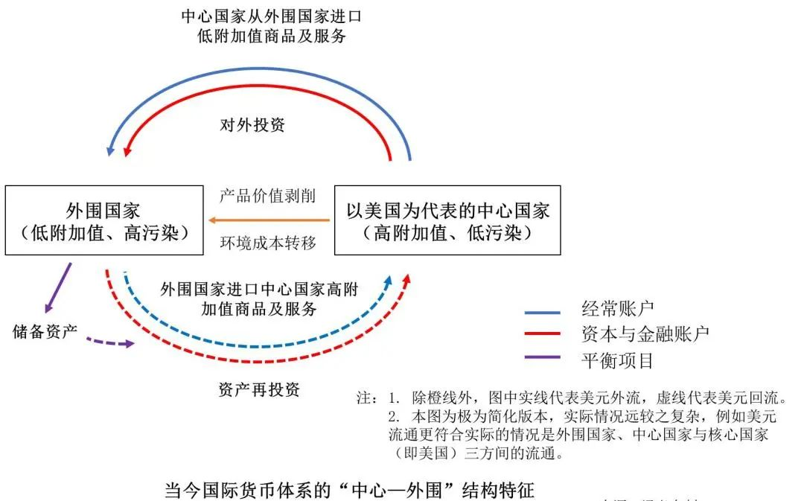
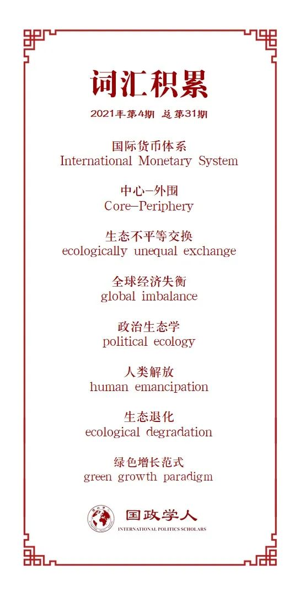

收录于合集

作品简介
【作者】 Romain Svartzman，法兰西银行经济学家，麦吉尔大学（McGill University）生态宏观经济学博士，人类世(Anthropocene) 经济学研究计划成员，研究兴趣为生态转型政治经济学、金融化及经济增长的生态制约。Jeffrey Althouse，北巴黎大学（Université Sorbonne Paris Nord）经济管理研究中心博士候选人。
【编译】 张鸿儒（国政学人编译员，山东大学英语与国际政治专业）
【校对】 朱文菡，晋玉
【审核】 阮含含
【排版】 韩心蕊
【美编 】游钜家
【来源】 Romain Svartzman, Jeffrey Althouse(2020). “Greening the international monetary system? Not without addressing the political ecology of global imbalances.” Review of International Political Economy , 1-26.
【归档】 《国际关系前沿》2021年第4期，总第31期。
期刊简介
《国际政治经济学评论》（Review of International Political Economy），创刊于1994年，是一份以国际政治经济学为主要内容的同行学术评审期刊。该刊2019年的影响因子为2.312。
国际货币体系的绿色化与全球经济失衡的政治生态学
Greening the international monetary system? Not without addressing the political ecology of global imbalances
Romain Svartzman
Jeffrey Althouse
内容提要
当前的国际货币体系（International Monetary System）是建立在“中心-外围”（Core- Periphery）的货币等级（currency hierarchies）基础之上的，而在这一体系下包括气候变化在内的各种生态危机都很难能得到解决。本文认为全球经济失衡（译者注：global imbalance，具体指一国拥有大量贸易逆差，而与之相对应的贸易顺差集中在另外一些国家的状态，是为经常账户的收支不平衡）与生态危机密切相连，二者关系可以用一个特别理论框架加以归纳：国际货币关系和全球经济失衡的政治生态学（译者注：political ecology，主要研究环境议题中政治、经济、社会等因素间的关系）。具体而言，货币霸权有赖于从外围国家向中心国家持续且不均衡的资源流动，而制约外围国家发展的货币等级也往往离不开生态等级，即：外围国家往往处于全球价值链的最低端，它们提供的也多为低附加值的自然资源或（及）高污染的工业产品，而中心国家拥有的货币特权不仅仅制约了外围国家的发展，也使其“帝国主义的生活方式”带来的社会经济后果外溢到整个世界，尤其是外围国家。本文以中美经济关系（“Chimerica” relationship，在本文特指美国经常账目逆差与中国经常账目顺差之间的复杂关系）为具体案例，认为美元的主导地位离不开中国煤炭驱动（coal- powered）的发展，而中国由国际货币体系外围国家向中心国家的地位转移则进一步加剧了系统性全球生态危机的可能。要建立一个均衡且绿色的国际货币体系，就必须扭转现有中心国家“帝国主义”的生产、消费及生活方式（追求无限制的经济增长，因此常会造成大量的资源浪费）。
文章导读
01
气候变化的国际政治经济学
尽管人们对气候变化的成因及后果有愈发清楚的认识，但国际气候谈判在应对气候变化上却不尽人意。比如，富裕国家先前承诺到2020年时每年拿出1000亿美元以帮助外围国家应对气候变化，但这一承诺并未完全实现。 实际上，应对气候变化及其他生态问题，首先要解决资本主义世界体系（capitalism world-system）的内在结构性问题。
货币等级在资本主义世界体系中已长久存在，而当前的货币等级可以用国家货币在全球的相对流动性（表现为体系中所有行为体持有该货币的意愿）及其是否充当国际债务的结算方式来进行衡量。如此看来，如今美元显然处于国际货币体系的顶端，而美国拥有着追求国内政策目标而不受外汇问题制约的“嚣张的特权”（exorbitant privilege）；欧元、日元等亦处于国际货币体系的中心地位，但弱于美元，总体而言是商业周期的制造者（business-cycle makers）；外围国家发行的货币处于国际货币体系的底端，在国际贸易、发行债券及吸引外来长期投资上面临诸多限制，是为商业周期的承受者（business- cycle takers）。为了缓解本国面临的“生存制约”（survival constraint，即缺乏足够的外汇以克服本国国际收支状态的局限性），这些外围国家不得不从事短期的低附加值产品的出口，而这一策略反过来又制约了外围国家高附加值产业的发展。当然，上述这一描述并非放之四海而皆准（one- size-fits-all），过去几十年存在有个别中低收入国家摆脱外围地位的案例（如中国），但仅是个案。
在国际货币体系架构未发生重大变更的情况下，气候变化等问题可能会进一步恶化。 一方面受制于“生存制约”，外围国家依旧无法采取实现低碳转型所必需的长期战略；另一方面外围国家面对气候变化的脆弱性，使得资本进一步逃离从而形成了恶性循环。面对这一情况，已有部分主张提出改革国际货币体系。一类主张对国际货币体系进行全面的改革，如联合国贸发会议（UNCTAD）上提出的“全球绿色新政”（global green new deal）。实现这一目标有必要重拾凯恩斯的“国际清算同盟”（international clearing union）设想，即采用单一的国际贸易货币及债权国与债务国间均衡的债款分配。另一类主张更具有短期可操作性，如绿色特别提款权（IMF将未使用的特别提款权租借给外围国家以资助其低碳转型）、绿色债务置换减免（债权拥有者以减免资金用于环保及可持续发展为条件减免外围国家负债）等。
02
国际货币关系的政治生态学
上述建议很有可能会解决国际货币关系中的一些持续不平等现象，但这些建议均建立在“在其他条件与中心国家相同的情况下，为外围国家提供充足的资金能够促进其绿色可持续的发展”这一基本假定之上。而本文则认为， 要建立一个平衡且生态可持续的国际货币体系，就必须考虑国际货币关系和全球经济失衡的政治生态学。
人们通常用货币的流动来衡量经济活动，却往往忽视了其背后能源及材料的流动。在资本主义世界体系中，外围国家专门生产能源、原材料等低附加值产品并将之输送至中心国家，在生产过程中往往会对当地环境造成破坏；而生产高附加值产品的中心国家，则往往消费了世界绝大部分的资源却未承担资源开采带来的环境后果，上述这一模式可被称为“生态不平等交换”（ecologically unequal exchange）。尽管在这一模式中外围国家可能会有短暂收益，但这种收益终究不会持久。
至此可以发现， 货币等级（支配货币）与生态等级（自然资源由外围向中心的持续流动）均制约了外围国家的发展，事实上二者是彼此联结且自我强化的 。有研究发现，自工业革命以来，世界体系中的关键货币地位往往与对当时主要能源的控制密切相关，而货币霸权又与地缘政治霸权紧密关联，一如煤炭时代的英镑（英国）、石油时代的美元（美国）。支配货币是进行生态不平等交换的一项关键性因素：中心国家依赖本国货币的等级权力来获得对经济社会新陈代谢至关重要的资源，外围国家则依赖对本国“自然”的开采和出口以获得中心货币，进而缓和本国所面对的“生存制约”。为了更好地理解将来的货币- 资源关系及在建设均衡绿色国际货币体系过程中的可能障碍，本文选择了以美元-煤炭为主要特征的中美经济关系作为具体的研究案例。
03
案例研究：中美经济关系
自20世纪80年代始，中心国家的非金融公司（Non-financial corporations）便已开启了产业外包的进程。在此过程中，中美经济关系表现得尤为突出：美国大量产业投资流入中国，同时中国生产的廉价产品大量流入美国，进而在提高了美国非金融公司利润的同时维持了美国国内的低物价和持续经济需求。美国资本之所以流向中国，不仅仅是因为中国低廉劳动力及宽松监管，也在于中国拥有易于开采的丰富煤炭资源。时至今日，煤炭依然是中国经济增长的关键性因素，而煤炭消费的增加也带来了大量温室气体排放，中国在2009年便已取代美国成为温室气体的最大排放国。与此同时，中美间不断深化的经济及生态联系也增强了美元作为一种全球货币的角色：中国在对美贸易顺差中获得的美元被用于购买美国国债等美元资产，资本完成向美国的回流，进而巩固了美元的支配地位。 中美经济关系这一例子反映出当前国际货币关系的重要一方面：生产的外包、金融全球化与生态退化（ecological degradation）三者共同维持了当今世界的货币及生态等级，同时促进了中心国家尤其是美国的资本积累。
上述这一论断主要是将中国视为外围国家，但实际上中国正在努力用消费引领经济增长，并力图提高在全球价值链中的地位。如果这些目标最终得以实现，中国将成为过去几十年少数几个得以逃离外围地位的国家之一，而中国经济的快速增长和转型需求，又需要消耗大量的资源。根据本文的主张，这些巨大的资源需求会促使中国从世界其他地区汲取资源（本文认为中国已经开始了此类行为），从而重塑全球资源流动格局。 进而需要思考的两个问题是：中国能否重塑全球货币及生态等级体系？以及这一趋势对发展均衡且绿色的国际货币体系有何影响？ 对上述问题的回答，取决于中国能否及如何将该国货币（即人民币）与21世纪的关键资源建立联系，具体探讨如下。
首先，中国能否重塑全球货币及生态等级体系？目前，中国正在大力推动人民币国际化，如2016年人民币纳入IMF特别取款权货币篮子以及2018年开始进行的人民币石油期货交易，但上述努力均无法完全推动人民币取代美元在全球货币及生态等级中的顶端位置。因而对中国而言，依然存在一种“美元制约”（dollar constraint），即一般情况下随着中国以美元计价的方式从国外大量进口资源，中国当前的经常账户盈余将不断缩小，最终将缺乏足够的美元用于资源进口，这会阻碍中国的经济发展。为了避免这一制约，中国正在推动以“一带一路”倡议（Belt and Road Initiative）为代表的替代方案：向沿线中低收入国家提供贷款，接受贷款的这些国家以本国的资源（如石油）作为抵押，并通过向中国提供资源的方式获得债务减免。这一方案在未排除美元的同时形成了关键资源与关键货币间的新关系。
其次，中国的发展对建设均衡且绿色的国际货币体系有何影响？对这一问题的回答并不令人乐观。尽管官方将“一带一路”倡议形容为生态文明项目、提出了2060年实现碳中和的目标以及在可再生能源领域的大量资金及技术投入，但其“一带一路”倡议也资助了许多对环境造成负面影响的项目。即使中国与全球经济系统为了应对气候危机而进行了脱碳化（decarbonization），但全球生态等级依然存在，例如可再生能源的发展往往依赖诸多关键原材料，而这些原材料多由外围国家提供。
如此看来，中国既是一个外围国家，也是一个中心国家。在过去几十年里，美国及其他中心国家将污染密集型及资源密集型产业外迁至中国，而中国如今似乎能够找到新的外围国家为其服务。但中国目前仍无法挑战美元在全球资源交易及出口型国家贸易盈余再投资中的主导地位。
04
国际货币体系正处于系统性危机和新（后）发展议程的十字路口
生态危机有可能会带来全球金融风险。以气候变化为例，一方面极端气候事件的增加与气候模式的长期变化会带来直接的经济及金融损失，另一方面快速的低碳转型也往往面临着不确定的金融风险。尽管现有研究并未将全球经济失衡（尤其是中美过去几十年里的经济关系）考虑在内，但事实上中美经济关系以及现有的国际货币体系已然面临着气候变化的直接威胁。此外，随着全球自然资源储量的不断减少以及新的资源主要提供者的消失，存在有中美两国爆发军事冲突争夺相关资源的可能性。
要建设一个绿色的国际货币体系，就必须要充分考虑本文提到的货币等级与生态等级之间的关系，换言之，国际货币体系的绿色改革需要一个政治生态学的视角。进而，本文提出了未来研究的三个方向：
首先，目前主流的绿色增长范式（green growth paradigm）具有严重的生态局限性。全球经济增长面临着有限的生态剩余空间，而这一空间又几乎全为中心国家所占据。 与其担忧中国崛起对全球生态的影响，倒不如反思主流的“帝国主义生活方式”。 因此未来的研究可关注中心国家在零增长（no- growth）范式与短暂去增长（temporary degrowth）范式之间的权衡，以及这一权衡对生态可持续国际货币体系的潜在影响。
其次，未来研究可将现有货币及金融改革相关文献更好地与政治生态学研究相结合。鉴于现有绿色转型路径可能会产生新的或强化现有的环境冲突（如资源开发过程中外围群体利益受损而引发的对抗），因此要进行生态可持续的全球转型，有必要对人类解放（human emancipation）的其他本体论及（后）发展议程保持开放态度。具体到政策上，对国际货币体系的改革应注意回应外围群体的诉求，例如在推行绿色提款权时要求受援助国保护上述群体的利益。
最后，本文提出的理论框架有待其他具体案例的进一步研究和检验，例如中国相关的其他案例，中国崛起的货币、生态维度与多种地缘政治因素彼此间的互动（如中、欧、美三方为获得稀土资源而采取的货币策略），以及中国理想的多边秩序类型与中国经济发展的物质需求之间的可能张力等。
05
结语
货币等级与生态等级之间存在着密切关联，而这一关联在过去几十年的中美经济关系中表现得最为明显：在金融全球化的背景下，煤炭驱动的中国随着经济增长产生了大量经常账户顺差，而这些资金被再投资到美元计价的资产之中。上述这一关系是当前生态危机的主要推动力，也反映出当前国际货币体系中不可持续的内在特征。随着中国由国际货币体系外围国家向中心国家的地位转移，系统性生态危机的可能性也在不断增加。尽管有人希冀中美合作应对全球挑战，或其中一方单方面推动本国经济的脱碳化，但本文认为，要建立均衡且生态可持续的国际货币体系，就必须进行由“帝国主义”生活方式向超脱经济增长目标的人类解放新本体论的深刻变革。当然，考虑到实现上述这一转变目标确为遥远，我们也应当切切实实地思考设计一个公平且绿色可持续的国际货币体系。
译者评述
本文作者从马克思主义政治经济学的视角，深入剖析了当前国际货币体系的两种负外部性（即全球经济失衡与生态危机）及上述两种负外部性之间的相互关系，并针对这些问题提出了突破性的建议。
对国际货币体系负外部性的分析首先要从该体系本身开始。作为一种制度，国际货币体系可被分为偏物质性的组织架构（architecture）与偏观念性的体制（regime）[1]。就组织架构而言，当前国际货币体系最显著的特征之一便为“中心—外围”结构：外围国家（即发展中国家）与中心国家（即以美国为首的发达国家）间依附与被依附的关系，换言之，发展中国家对美元存在高度依赖。这一非对称关系不仅仅是发达国家对发展中国家产品价值的剥削，也伴随着发达国家经济发展过程中环境成本的转移[2]。需要指出，“中心—外围”这一国际货币体系结构较为简单和理想化，更为真实的情况为“核心国家（美国）——中心国家——外围国家”的三级等级体系，但为了便于读者理解发达国家对发展中国家的剥削现象，本文将针对“中心—外围”这一简化情况进行分析，具体如下图所示。

图源：译者自制
中心国家与外围国家间美元的流通主要通过三个渠道：经常账户（current account）、资本与金融账户（capital and financial account）与平衡项目（balancing items）。经常账户是一国国际收支的主要组成部分，主要为商品及服务的进出口收支，本文提到的全球经济失衡便为对经常账户收支的描述；与之相对，金融与资本账户是指除了商品及服务进出口产生资金流动之外的资金流动，如直接投资、金融市场投资等；平衡项目则主要表现在储备资产的增减上[3]。呈现“中心—外围”结构特征的国际货币体系实际与全球产业链的等级性密切关联：以美国为代表的中心国家通过对外投资的方式将低附加值、高污染的低端产业转移至外围国家，进而以低于产品价值的价格从外围国家大量进口初级产品，在美元外流的同时实现了对发展中国家产品价值的剥削和环境成本的转移。而外围国家通过贸易顺差获得美元之后，除却部分美元成为储备资产外，一部分美元被用于进口中心国家高附加值产品，另外一部分美元通过直接或间接的方式进行资产再投资（如购买美国国债）[4]，实现美元由外围国家向中心国家的回流，进一步维持了现有国际货币等级。
就体制而言，当前国际货币体制的特征则表现为美国在原则、规范、规则和决策程序上拥有的绝对话语权（在此借鉴了克莱斯纳对国际机制的定义[5]），最具有代表性的便为20世纪80年代以来在新自由主义推动下形成的“华盛顿共识”。“华盛顿共识”的主要内容便为主张减少政府干预、推动全球贸易及金融自由化，而全球贸易和金融的自由化很大程度上加剧了现有的全球经济不平衡，进一步增强了发展中国家的脆弱性及其对发达国家的依赖。
本文作者并未止于对当前国际货币体系负外部性产生机制的分析，而是更进一步借助生态不平等交换理论在全球货币等级与全球生态等级两种负外部性之间建立起了内在联系。生态不平等交换理论强调的是全球政治经济因素（尤其是国际贸易的结构）所引发的发达国家与发展中国家在环境成本与人类发展上的不平等分配现象[6]。具体看来，由于发达国家发行的货币更容易为国际社会所接受，因而发展中国家在国际贸易中高度依赖发达国家的货币（货币等级）；为了获得外汇，发展中国家不得不以牺牲本国环境为代价，从事能源、原材料等初级产品出口，相当大程度上承担了发达国家经济发展的环境成本（生态等级）。而发展中国家环境的恶化（生态等级），则进一步限制了当地经济的可持续发展及其在国际货币体系中地位的提高（货币等级）。
针对上述国际货币体系的负外部性，本文作者提出了突破性的解决办法——彻底变革中心国家一味追求无限制经济增长的“帝国主义”发展范式，实现人类的最终解放（尽管这一建议可能过于理想主义）。在这里，本文已上升至对资本主义的反思：人与自然之间应是何种关系？我们应当如何衡量人类活动对地球生态的影响？就前者而言，本文主张的“零增长”乃至“短暂负增长”范式实际意味着人类从过度干预自然的一次撤退，是从“资本主义中的自然”（nature in capitalism）向“自然中的资本主义”（capitalism in nature）[7]转变的重要一步。就后者而言，本文对生态不平等交换的分析暴露出发达国家环保主义的虚伪性——发达国家民众光鲜亮丽生活背后的环境成本实际上被转嫁至发展中国家，这进而为我们衡量人类活动对彼此生活及地球生态的影响提供了新的视角——隐形污染（invisible pollution）和生态足迹（ecological footprint）。“隐形污染”这一概念关注在产业链分工高度发达的时代中，某一产品生产消费全过程而非某一特定阶段对环境造成的影响[8]，“生态足迹”则关注为个人及群体生存、产品生产提供自然资源，并消纳产生废物的具有生产力的地域面积[9]，换言之即维持人类基本生活的生存空间。以比特币的发掘为例，尽管这一行为表面看来对环境基本不存在负面影响，但比特币挖矿本身需消耗大量电力，进而也就意味着大量温室气体的排放。根据相关统计，2019年全球比特币发掘用电量为124太瓦时，与挪威全年用电量相当[10]，考虑到当前存在着的“比特币狂热”，比特币挖矿会带来更多的“隐形污染”为大概率事件。同样，表面上发达国家的经济行为具有较弱的环境负外部性，但支撑发达国家经济运行的大量进口产品往往伴随着对产地（多为发展中国家）生态环境的破坏，而发达国家向发展中国家进行的环境成本转移，实际上便压缩了发展中国家民众的生态足迹。
当然，本文的价值远不止于此。在作者讨论的基础上，我们可以进一步思考以下几个问题：
首先，文中提到中国正在走向国际货币体系的中心位置，那么值得进一步思考的问题便是：中国为何能够摆脱在国际货币体系中的外围地位？译者认为，对这一问题的回答，需要考虑到中国崛起的双向性，一方面是“中心国家”为何相对衰落，另一方面是中国经济为何能够保持几十年的中高速发展。后者则进一步牵涉到中国的政治经济体制，对此部分学者已进行了深入探讨，如郑永年等的“制内市场”[11]，张发林的“具有中国特色的发展型国家”[12]等。
其次，本文认为美元的“嚣张特权”离不开对关系到世界经济命脉的关键资源的控制（即石油美元），那么从一个演化的视角出发，关系到世界经济命脉的下一代关键资源会是什么？是数据，是新能源（如氢能），抑或是其他？进一步讲，工业革命至今，关系世界经济命脉的关键资源（煤炭、石油）往往呈地理集中分布态势，那么随着技术的进步，下一代关键资源有无可能呈现出去中心化的分布特征，进而难以被少数国家所单独控制？
此外，本文作者提到随着中国在国际货币体系中地位的提高，系统性的全球生态危机可能会进一步加剧，那么我们可以进一步思考：中国在全球货币治理乃至全球金融治理中扮演了以及应当扮演怎样的角色？中国的崛起确实会消耗大量的资源，客观上可能会对全球生态环境造成一定压力，但译者认为不能因此否认中国在推进近年来陷入“均衡困境”（在此，均衡困境是指制度变迁尚未达到最优状态，却因动力逐渐减弱而陷入停滞的情况[13]）的国际货币体系改革上的可发挥的积极作用，更不能因此抹杀中国寻求经济发展的权利。实际上，本文作者也认为不应大肆批判中国崛起的环境影响（见第四部分），且“彻底变革发展范式”这一目标确实遥远，更切合实际的做法应该是寻求建立一个公平且绿色的国际货币体系（见结论部分），而中国在这一过程中应发挥建设性作用。
最后值得思考的问题是：中国应如何在全球金融治理中发挥积极作用？更进一步讲，中国应如何在全球金融治理中提高自身的国际话语权？针对上述问题的回答，有必要从新制度主义关于制度变革的相关论述入手。根据新制度主义者的观点，由于路径依赖、既得利益等因素，国际制度的有效变革往往离不开外部的冲击。由是观之，新冠疫情危机可能会成为打破现有全球货币等级、提升中国国际话语权的一个契机，具体可参考既有关于国际议程设置的相关研究[14]，如提出新的发展理念、利用中国与他国间密切的经贸联系、积极推动现有国际组织（如IMF）改革等。但鉴于作为国际货币体系核心问题根源的非主权国际货币的缺失与主权货币的国际化目前仍远未得到解决，推动建设公平且绿色的国际货币体系，依然任重道远。
总而言之，本文对全球货币等级与全球生态等级的相关分析提醒我们，在积极参与全球金融治理的同时，一方面要注意维护发展中国家的利益（否则有可能引发当地民众对他国经济存在的强烈反对，甚至走向极端的经济民族主义，引发传导效应[15]），另一方面也要积极参与全球生态治理，努力在经济发展、国际公平与环境保护三者间寻求恰当的平衡。路漫漫其修远兮，吾将上下而求索。
参考文献
[1]张发林：《全球货币治理的中国效应》，载《世界经济与政治》，2019年第8期，第96~126页和第158~159页。
[2]冯志轩、刘凤义：《生态不平等交换、价值转移与发展中经济体的环境问题》，载《世界经济》，2019年第4期，第3~28页。
[3]注：于此借鉴了对国际收支平衡表的内容划分，鉴于学界对这一划分尚有争论，本文提出的经常账户、资本与金融账户、平衡项目三种美元流通渠道及主要构成仅供参考。
[4]斐平、杨洋：《美元循环不畅与中国对策》，载《金融纵横》，2014年第7期，第33~43页。
[5]Stephen D. Krasner, “Structural causes and regime consequences: Regimes as Intervening Variables,” International Organization , Vol.36, No.2, 1982, p.186.
[6]Jennifer E. Givens, Xiaorui Huang, and Andrew K. Jorgenson, “Ecologically unequal exchange: A theory of global environmental injustice,” Sociology Compass , Vol.13, No.5, 2019, e12693.
[7]Jason W. Moore, Capitalism in the Web of Life: Ecology and the Accumulation of Capital , Verso Books, 2015.
[8]Gerry Mcgovern, World Wide Waste: how digital is killing our planet and what we can do about it , Silver Beach Publishing, 2020.
[9]“Ecological footprint”, https://www.footprintnetwork.org/our- work/ecological-footprint/, 访问时间2021年3月15日。
[10Jonathan Ford, “The environmental idiocy of Tesla’s bitcoin bet”, Financial Times , February 14, 2021, https://www.ft.com/content/a9bd5b42-272e-465c-9284-9fe2a7906f48, 访问时间2021年3月15日。
[11]郑永年、黄彦杰著，邱道隆译：《制内市场：中国国家主导型政治经济学》，杭州：浙江人民出版社2021年版。
[12]Falin Zhang, “The Chinese developmental state: standard accounts and new characteristics.” Journal of International Relations and Development , Vol.21, No.3, 2018, pp.739-768.
[13]张发林、张巍：《均衡困境与金融安全：国际货币制度变迁及问题》，载《国际安全研究》，2018年第6期，第40~61页和第153页。
[14]张发林：《全球金融治理议程设置与中国国际话语权》，载《世界经济与政治》，2020年第6期，第106~131页和第159页。
[15]Jo Jakobsen, and Tor G. Jakobsen. “Economic nationalism and FDI: The impact of public opinion on foreign direct investment in emerging markets, 1990‐2005.” Society and Business Review , Vol.6, No.1, 2011, pp. 61-76.
词汇整理

文章观点不代表本平台观点，本平台评译分享的文章均出于专业学习之用, 不以任何盈利为目的，内容主要呈现对原文的介绍，原文内容请通过各高校购买的数据库自行下载。
好好学习，天天“在看”
国政学人
支持学术公益与知识传播
微信扫一扫赞赏作者 __赞赏
已喜欢，对作者说句悄悄话
取消 __
发送给作者
发送
最多40字，当前共字
上一页 1/3 下一页
长按二维码向我转账
支持学术公益与知识传播
受苹果公司新规定影响，微信 iOS 版的赞赏功能被关闭，可通过二维码转账支持公众号。